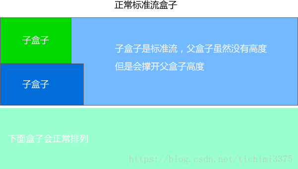
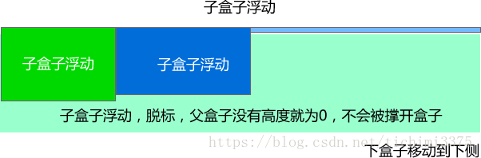

人生就像乘坐北京地铁一号线：
途经国贸，羡慕繁华；
途经天安门，幻想权力；
途经金融街，梦想发财；
经过公主坟，遥想华丽家族；
经过玉泉路，依然雄心勃勃…
这时，有个声音飘然入耳:乘客你好,八宝山马上就要到了！
顿时醒悟：人生苦短，有始有终。
好比我们的浮动，有浮动开始，则就应该有浮动结束。
为什么要清除浮动
我们前面说过，浮动本质是用来做一些文字混排效果的，但是被我们拿来做布局用，则会有很多的问题出现， 但是，你不能说浮动不好 。
由于浮动元素不再占用原文档流的位置，所以它会对后面的元素排版产生影响，为了解决这些问题，此时就需要在该元素中清除浮动。
准确地说，并不是清除浮动，而是清除浮动后造成的影响
如果浮动一开始就是一个美丽的错误，那么请用正确的方法挽救它。
清除浮动本质
清除浮动主要为了解决父级元素因为子级浮动引起内部高度为0 的问题。


清除浮动的方法
- 1.额外标签法 是W3C推荐的做法是通过在浮动元素末尾添加一个空的标签例如 ，或则其他标签br等亦可。
1(优点： 通俗易懂，书写方便 缺点： 添加许多无意义的标签，结构化较差。 我只能说，w3c你推荐的方法我不接受，你不值得拥有。。。)
- 2.父级添加overflow属性方法(优点： 代码简洁 缺点： 内容增多时候容易造成不会自动换行导致内容被隐藏掉，无法显示需要溢出的元素。)
- 3.使用after伪元素清除浮动(:after 方式为空元素的升级版，好处是不用单独加标签了 优点： 符合闭合浮动思想 结构语义化正确 缺点： 由于IE6-7不支持:after，使用 zoom:1触发 hasLayout。代表网站： 百度、淘宝网、网易等)
- 4.使用before和after双伪元素清除浮动(优点： 代码更简洁 缺点： 由于IE6-7不支持:after，使用 zoom:1触发 hasLayout。代表网站： 小米、腾讯等)
其实本质叫做闭合浮动更好一些, 记住，清除浮动就是把浮动的盒子圈到里面，让父盒子闭合出口和入口不让他们出来影响其他元素。在CSS中，clear属性用于清除浮动，其基本语法格式如下：选择器{clear:属性值;} clear 清除 both: 同时清除左右两侧浮动的影响